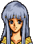
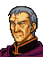

Narration
レンスターでの戦後処理を終えた
リーフたちがアルスターに出発したころ
セリス公子ひきいるイザーク『解放軍』は
アルスター攻略に成功する
フリージの国王ブルームは
コノートに逃れ
アルスターは
セリスたちにより解放された
このアルスターでリーフは従兄弟でもあり
そして生涯の盟友となる
『光の公子』、シアルフィの公子セリスと
初めて会見することとなった
Opening 1 Adorable Lady Julia and a distracted Lord Seliph

セリス様
そろそろお戻りになられた方が・・・

え、ユリア
もうそんな時間？
リーフ王子
話はつきませんが
私たちはもう戻らねばなりません
大丈夫です
コノート攻略はわれわれにまかせて
王子はマンスターに直行してください

セリス様
わがままを言って申し訳ありません
いや、王子の気持ちはよくわかります
何も気にすることはありません
では、後日、マンスターで会いましょう
ええ、マンスターで、必ず！
リーフ様のご武運を
お祈りいたしております・・・
ユリア様もお気をつけて・・・
Opening 2

リーフ王子
セリス公子との会見はいかがでしたか？
りっぱな方だ
ぼくとたった一つしかちがわないなんて
信じられないよ
さよう、あの若さで
われらに１０倍する兵力をようし
イード砂漠をこえてこられたのです
確かに
ただものではありませんな
アウグストは以前
『作られた英雄』といっていたぞ
そういう一面もあるということです
だが、セリス公子に関しては
本人の素質が
抜きん出ているのも、また、事実です
父、シグルド公子を
はるかにしのぐでしょうな
ぼくはまだまだだ
自分が恥ずかしくなってしまう・・・
なんの
王子はこの一年で
ずいぶん成長されました
あと一年もすれば
今のセリス公子と
同じようになられるでしょう
まあ、それはさておき
今後の作戦はどのように決まったのです？
セリス様の本隊は
予定通り海岸ぞいに東進し
コノートの攻略を目指されるそうだ
では、わが軍はこのままダンツヒへ？
セリス様はぼくの希望を
快く受け入れてくれた
言うまでもないことだが
ぼくは一刻も早く
マンスターに行きたい
コノートはセリス様におまかせして
マンスターの攻略を目指したいんだ
では、いずれにしても
ダンツヒ砦は落とさねばなりません
あの砦は内陸ルートの要ですからな
Opening 3

リーフ王子
出陣の準備がととのいました
では、一気に砦を攻め落とそう！
Opening 4
わかっているな
われらは傭兵部隊だ
無理に戦う必要はない
敵が兵力を分散したとき
いっきにケリをつける
それまでは持ち場をはなれるな！
Church
If Linoan visits
ほう・・・
そなたはターラのリノアン公女じゃな

え？ どうして私のことを？
そなたの父上とは
まんざら知らぬ仲でもなくての
亡き母上のこともよく存じあげておるよ
そなたは母上に生き写しじゃからの
そうでしたか・・・
聞けば
リーフ王子とともに
戦っておられるそうじゃの
はい
ふむ・・・
やはり聖戦士の血は争えぬか・・・
聖戦士？
私が・・・ですか？
ん？
そなたの父は何も言わなかったのか？
ターラ公爵家は
グランベル王家に連なる血筋
聖戦士ヘイムの血を継ぐ一族なのじゃぞ
私が・・・ヘイムの血を・・・
その様子では
まだそなたの持つナーガの力に
気づいておらぬようじゃの・・・
わしとともに来なさい
そなたの体にねむる
ナーガの血を目覚めさせてやろう
はい・・・
If someone other than Linoan visits
解放軍のかたがたか
これから東は帝国軍の拠点に近づくゆえ
戦いもいっそう困難なものとなろう
このせいすいを持ってゆきなされ
なんらかの時に役に立つじゃろうて
House north
.png)
帝国に支配されてからというもの
この辺りも
すっかりさびれてしまって・・・
また、昔のように
戻れればよいのだけれど・・・
そのためにも、ぜひ
帝国をこのあたりから
追い払ってください
これ、つまらぬものですけど
もっていってください
きっとお役に立つと思います
House south
.png)
わしももう２０年・・・
いや１０年若ければ
おまえさんたちとともに戦うのじゃがの
せめてこのわしの愛用した剣だけでも
戦いに参加させてくれんかの
わしも解放軍の役に立ちたいんじゃ・・・
After seizing
If anyone has been taken prisoner in earlier chapters
アウグスト！
ここはただの砦ではないな
敵の守りがきびしすぎる
どうやらここは
捕虜収容所のようですな
われらが包囲したことで
敵は捕虜の処刑を始めたようです
なんだと！？
では一刻のゆうよもならない
今すぐ捕虜の救出に向かおう
リーフ様
兵はつかれております
それにロプトの魔道軍が
来ているとの情報もあります
ここはいったんお引きください
いや、だめだ、アウグスト
仲間は見捨てられない
捕えられたものたちは
ぼくがひとりでも救い出す！
ふっ・・・
やむをえませんな
では少数の者をお連れください
他のものは
休ませることにいたしましょう
If no one has been taken prisoner in earlier chapters
アウグスト
砦内のようすはどうだ
ふむ・・・
もぬけのからですな
どうやらここは
捕虜収容所だったようですが
今は使われておらぬようです
そうか・・・
では、先を急ごう
トラキア河の向こうは
もうマンスターなのだろう
はっ・・・
ですが王子
敵はトラキア河に防衛線をきずき
待ち受けておるでしょう
まだまだ油断はなりません
Fraus: battle quote

わが武人としての名誉にかけて
この砦は抜かせん！！
Fraus: defeat quote
ぐっ・・・無念・・・
Fraus: release quote
助かったのか・・・
しかしこれから
どうすればよいのだ・・・
Seimetol: battle quote
レンスターの兵め！
覚悟！
Seimetol: defeat quote
・・・陛下・・・
申し訳・・・あり・・・
ません・・・ぐふっ
Seimetol: release quote
陛下になんと
おわびすればよいのだ・・・